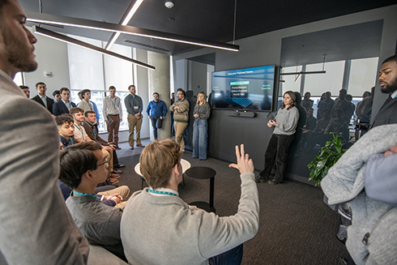

Tampa Bay’s Tech Evolution: Why Digital Infrastructure Is The New Sunshine State Gold
A new Tampa Free Press article highlights how the University of South Florida’s Bellini College of Artificial Intelligence, Cybersecurity and Computing is helping drive Tampa Bay’s tech evolution. Through research, partnerships and talent development in AI and cybersecurity, the college is strengthening the region’s digital infrastructure and preparing the workforce needed to support a rapidly growing innovation economy.

From robotics competitions to Microsoft internship, USF student builds path in cybersecurity
USF student Fagan Afandiyev turned an early passion for robotics competitions into a path toward a career in cybersecurity. After gaining experience through student competitions and industry consulting, he will spend the summer as a penetration testing intern at Microsoft, where he will help identify system vulnerabilities before attackers can exploit them.
Two USF Students Named 2026 Goldwater Scholars
University of South Florida third-year students Caleb Fernandes and Diya Upadhyaya have been awarded the nation’s highest honor for undergraduate STEM research, the Goldwater Scholarship. Continuing its remarkable research growth, USF has now produced at least one Goldwater Scholar every year since 2018.
More News >>>